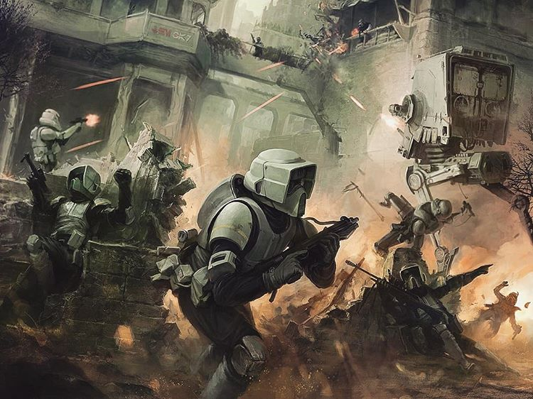

Stormtroopers
Los mejores conciudadanos del Imperio son seleccionados para formar parte de la unidad de asalto y más especializada del ejército del Imperio.
Recibiendo la enseñanza pormenorizada de la Academia de Tropas de Asalto de Coruscant o sus sedes anexas de Ord Mantell y Corellia, los reclutas serán instruidos en el manejo de los blaster,
los cañones pesados, los cazas, los AT-ST y toda la gama de vehículos que el Imperio pone a su disposición. Tras los años de permanencia en las academias, los stormtroopers están listos
para viajar allí donde el Imperio crea que son necesarios para salvaguardar el estilo de vida, la prosperidad y la PAZ que otorga nuesto Gran Imperio.